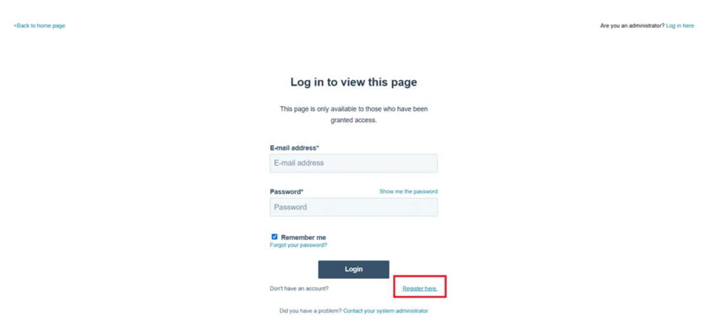
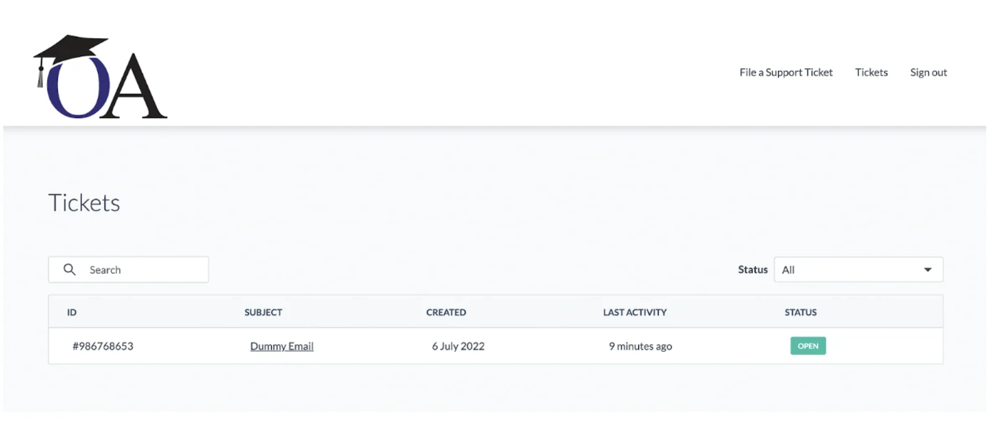
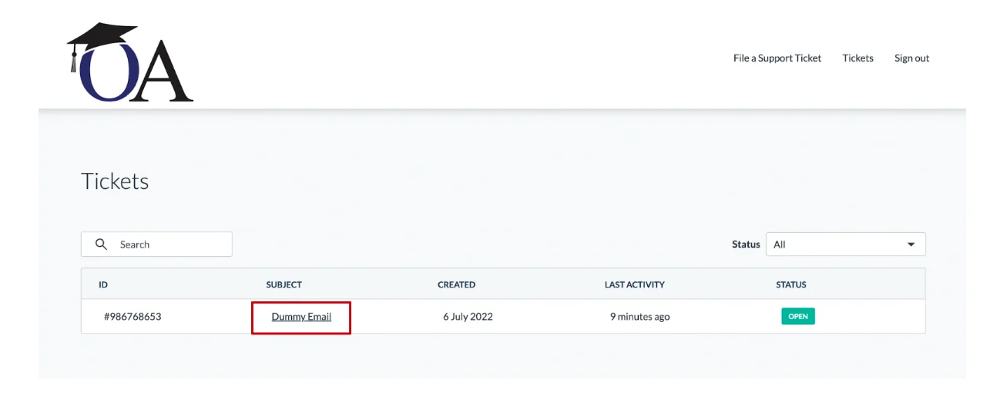
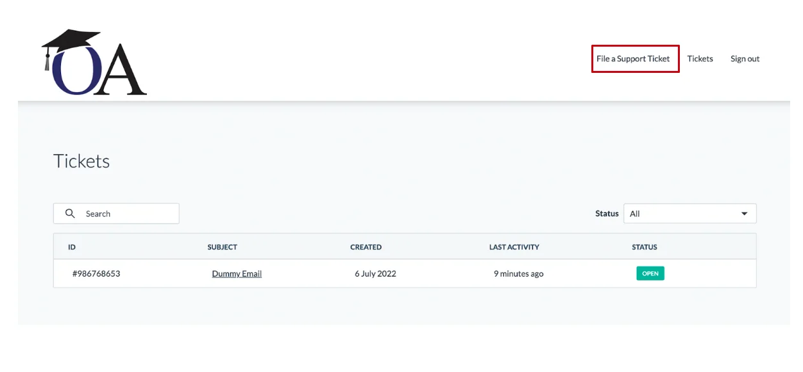
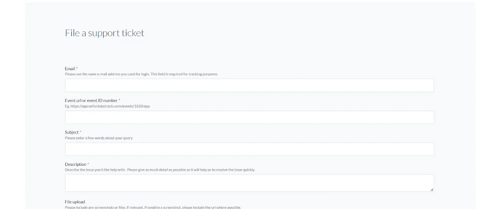
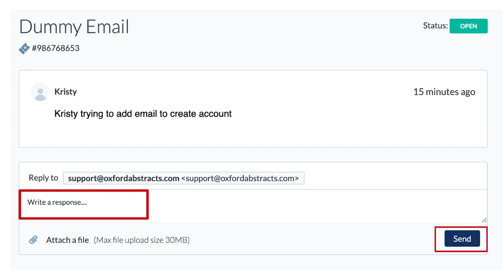

Using the customer portal
Learn how to get set up on our Customer Portal, and how to create and keep track of your help desk tickets.#
Please note: You are still able to respond to help desk enquiries using email as before.
This service will help keep you in the loop for all the tickets you have raised, what their status is, and all conversations relating to these tickets.
Below you can follow the instructions on how to access our Customer Portal Service.
You can skip forward to the following sections
What's the difference between Open and Closed tickets?
How to raise a support ticket?
How to respond to a support ticket?
How to sign up for the Customer Portal
Before we go any further, please bear in mind that access to the Customer Portal is not automatic. We will need to accept users to view their tickets, therefore to add a user to the list, please contact support@oxfordabstracts.com with the subject line “Add user to Customer Portal”.
Once we have registered the user, the set-up/signing in is extremely simple to do, so let’s delve into how the Customer Portal works.
- To access our Customer Portal please click here.
- For reference, the web address is: https://help.oxfordabstracts.com/tickets-view

Once we have granted permission for you to access the Customer Portal you will need to create an account.
To do this type in your email address that is registered and create a password
A confirmation email will be sent to your address. You need to click on this email and confirm your registration.
Once your account is verified, you can login via - https://help.oxfordabstracts.com/tickets-view
When you sign in, the page will show you all the tickets you have raised and whether they are Open or Closed.**
Open tickets* mean they are either in the queue to be dealt with or are being seen too, and Closed tickets* mean they have been dealt with and resolved.
- When you click on one of the tickets, you can view the correspondence relating to that issue.
The emails that are sent by you are the ones that are tracked.
If you have been CC’d into an email that has raised a ticket, you will only receive the e-mail, you will not see the ticket on your dashboard as you didn’t raise the ticket.
If you reply to a message you were CC’d into, but you did not create the ticket (someone else did), the ticket will not appear on your dashboard.
However, you can still follow up on the conversation via e-mail.

What does each section mean?
ID - internal Hubspot ticket ID.
Subject - The subject of your message/ticket.
Created - The date when the ticket was created.
Last activity - A time stamp for when activity last happened on the ticket.
Status - This tells you if the ticket is Open (currently being looked into) or Closed (the ticket/issue has been resolved).
Search - Here you can search for a specific ticket you are looking for.
Status Box (top right) - You can filter which tickets you would like to see - All / only Open tickets / only Closed tickets.
To view the entire correspondence on a ticket then please click on the ticket's Subject Title.

How to raise a support ticket
You can now create a support ticket from the Customer Portal.
From your dashboard navigate to the top right of the page and click File a Support Ticket.

Please note you cannot add recipients when raising a ticket this way.
The only way to raise a ticket and cc recipients is via an email.

You will need to add the following information:
Email: please add the e-mail address you used for your Customer Portal login.
Event URL or ID number
Subject: few words to describe the issue (like an email subject line)
Description: This is where you describe what the problem is you are experiencing.
File upload functionality: This is where you can upload any necessary attachments for the ticket.
Once the above fields are complete you can click the Submit button to post your query.
Your new ticket will appear on your dashboard.
From here you can keep track of responses by clicking View The Details.
Responding to tickets
To continue the conversation with an Open ticket, you can send a message through the Customer Portal.
Click on the Subject Title (see image above) and start typing in the Write a response box.
When you have finished typing your response click Send.

If you prefer, you can also do this via email, the Customer Portal will automatically track it.
If you would like to message the support team about an issue that is on a Closed ticket, you are unable to do this via the portal.
You will need to reply via email, which will automatically change the status of the ticket to Open.
If you require further assistance please get in touch with our help desk via our Contact Form.
Did this page solve it?
Thanks — this helps us fix it.
Didn't solve it? Ask our support team
No question is too small, and there's no charge for asking. Raise a ticket and someone who knows the software will pick it up.